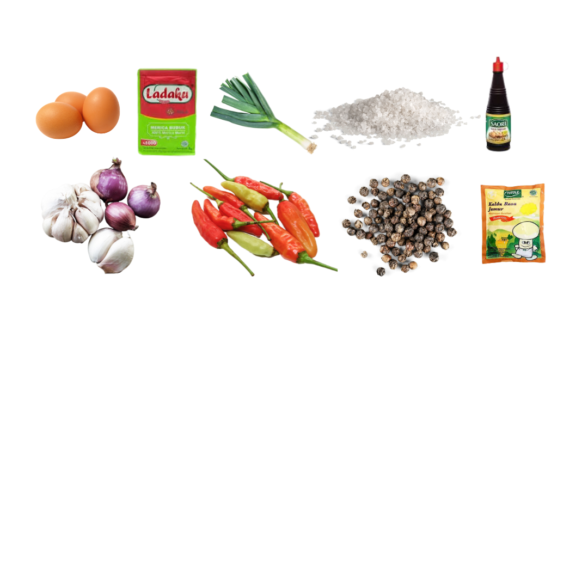

Bahan:
- Telur
- Daun Bawang / Pre (opsional)
- Bawang Putih
- Bawang Merah
- Cabe Rawit
- Sosis (opsional)
Bumbu:
- Ladaku
- Garam
- Kaldu Jamur
- Saos Teriyaki
- Kecap

Cara Membuat:
- Goreng telur mata sapi
- Iris baput, bamer, cabe, dan pre. Lalu tumis hingga harum
- Tambahkan air secukupnya
- Tambahkan bumbu sesuai selera
- Masukkan telur, aduk hingga rata
- Tunggu hingga air menyusut dan meresap sambil di bolak balik